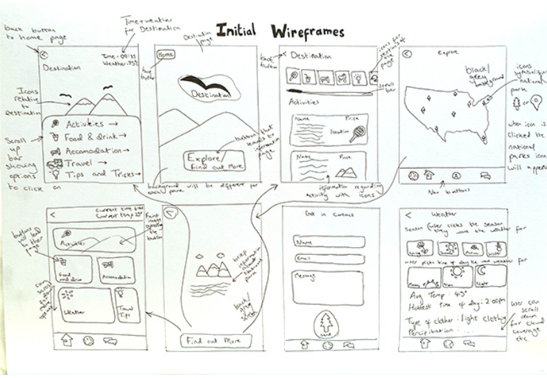
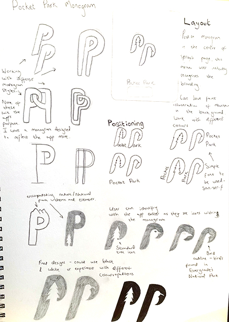

Problem
Our brief was to create travel app with illustrations, the possibilities were endless with what I could base my app on so I drew up mind maps and got my ideas onto paper. I wanted my app to be educational and benefit the users in some way.
I decided to go with an app enabling user’s to explore America’s National parks through their smartphone.
Role: Branding, illustration, app design.
Tools: Pencil & paper, Adobe Illustrator, InVision.
Process
My ideas ranged from a currency app to a single destination app whilst considering past travelling experiences I've had. I based it around the National Parks in America, I wanted to chose a location based app and I have been to two national parks so the app was personal to me. My target audience are adults visiting the parks to educate them and their families on them.
As you can see I brainstormed my ideas as well of what i could include in my app, this helped when creating my wireframes as I had an idea of what content to include.
I came to the idea of including a number of parks, and within them listing possible activities, transport, accommodation, weather, travel tips and food and drink. I know before going to the National Parks that I went to, I would have found an app with this idea very helpful.
Initial Sketches
Below are my initial wireframes with a rough idea of what I want to include. I’ve shown what each page will lead to and designed different designs for the one page as I wasn’t sure which layout to go for.
I was pleased with these designs however after our design critique I realised I wasn't fully settled on the layout which was a challenge I had to overcome, I also needed to decide on icons and a colour scheme.

I redesigned the layout as well as designing possible icons. I was happier with the updated designs and I think they had greater potential than the previous ones.
Low Fidelity wireframes
I produced low fidelity wireframes to get a better idea of how the app would work. The user will navigate through the app through guided buttons so each screen is easily accessible, I also included a scroll bar on the Location screen so that the buttons weren't taking up as much space.
Making Monograms
The name "Pocket Park" was decided as it relates to the app's theme and has a nice ring to it, it suits the app as it is essentially a park guide in your pocket. Below are the sketches I created to design the monogram, my thought process was to incorporate icons relating to the app's theme, which led to including a tree and bird outline design.

To begin creating the monogram and used the font Atrament SemiBold Regular as a guide to sizing and style, however I created the letters using shapes and cutting out parts using the pathfinder remove front tool.
Below is the finished monogram and colour scheme when I designed it, I slightly changed the colour scheme when designing the app as this one wasn't the most aesthetically pleasing option.